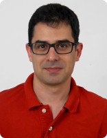

Pedro Miraldo
Institute for Systems and Robotics,
Instituto Superior Técnico,
University of Lisbon,
Av. Rovisco Pais, 1, 7th floor,
1049-001 Lisboa,
Portugal.
E-Mail: pedro(dot)miraldo(at)tecnico(dot)ulisboa(dot)pt

Short Bio:
I am a Researcher (second stage, "Investigador Auxiliar") and invited Assistant Professor at
the Institute for Systems & Robotics and the Department of Electrical & Computer
Engineering, Instituto Superior Técnico, Lisboa (IST). Before joining IST, I was a
postdoctoral associate at KTH Royal Institue of Technology from 2018-19 and an FCT
postdoctoral researcher at the IST from 2014-18. From 2015-18, I was an Invited Assistant
Professor at IST (ECE, and CS&E). I got an M.Sc and Ph.D. degrees in Electrical and Computer
Engineering, from the Faculty of Sciences and Technology, University of Coimbra, Portugal
(2008 and 2013 respectively), under the supervision of Prof. Helder Araujo. I am a member of
The Institute of Electrical and Electronics Engineers (IEEE).
My main research topics are: 3D computer vision, robot vision, active vision.
|
News:
-
[03-2021]
- Paper accepted in the IEEE Transactions on Robotics (T-RO):
On Incremental Structure-from-Motion using Lines
[link];
2021
-
[09-2020]
- Paper accepted in the Asian Conf. Computer Vision (ACCV):
Mapping of Sparse 3D Data using Alternating Projection [link];
-
[07-2020]
- Paper accepted in the IEEE/RSJ Int'l Conf. Intelligent Robots and
Systems (IROS):
Fast Model Predictive Image-Based Visual Servoing for Quadrotors [link];
-
[03-2020]
- Paper accepted in the Journal of Mathematical Imaging and Vision
(JMIV):
On the Generalized Essential Matrix Correction: An efficient solution to the problem
and its applications [link];
-
[02-2020]
- Two papers accepted in the IEEE/CVF Conf. Computer Vision and Pattern
Recognition (CVPR):
Minimal Solvers for 3D Scan Alignment with Pairs of Intersecting Lines [link],
and
3DRegNet: A Deep Neural Network for 3D Point Registration [link];
-
[01-2020]
- Paper accepted in the IEEE Int'l Conf. Robotics and Automation (ICRA):
Active Depth Estimation: Stability Analysis and its Applications [link];
2020
-
[07-2019]
- I joined the Instituto Superior Técnico, Lisboa, as a Researcher;
-
-
[06-2019]
- Paper accepted in the IEEE/RSJ Int'l Conf. Intelligent Robots and Systems
(IROS):
A Framework for Depth Estimation and Relative Localization of Ground Robots using
Computer Vision [link,video];
-
[02-2019]
- Paper accepted in the IEEE/CVF Conf. Computer Vision and Pattern
Recognition (CVPR):
Minimal Solvers for Mini-Loop Closures in 3D Multi-Scan Alignment [link];
-
[01-2019]
- Paper accepted in the American Control Conference (ACC): Active
Estimation of 3D
Lines in Spherical Coordinates [link];
-
[01-2019]
- Two papers accepted in the IEEE Int'l Conf. Robotics and Automation
(ICRA):
1) POSEAMM: A Unified Framework for Solving Pose Problems using an
Alternating Minimization
Method [link,
code], and
2)
OmniDRL: Robust Pedestrian Detection using Deep Reinforcement Learning on
Omnidirectional
Cameras [link,video];
2019
- [12-2018]
- Paper accepted in the Elsevier Robotics and Autonomous Systems Journal
(RAS):
Efficient and Robust Pedestrian Detection using Deep Learning for Human-Aware
Navigation [link,video];
- [07-2018]
- Paper accepted in the European Conf. Computer Vision (ECCV):
A Minimal Closed-Form Solution for Multi-Perspective Pose Estimation using Points and
Lines, [link,project,video];
- [07-2018]
- I will join the KTH Royal Institute of Technology, Stockholm, as a
PostDoctoral Researcher;
- [06-2018]
- Paper in IEEE/RSJ Int'l Conf. Intelligent Robots and Systems (IROS):
Active Structure-from-Motion for 3D Straight Lines [link,video];
- [02-2018]
- Paper accepted in the IEEE/CVF Conf. Computer Vision and Pattern
Recognition (CVPR):
Analytical Modeling of Vanishing Points and Curves in Catadioptric Cameras [link,project];
- [01-2018]
- Paper in IEEE Robotics and Automation Letters (RA-L) and IEEE Int'l Conf.
Robotics and Automation (ICRA):
Increasing robustness of vision-based localization using potential fields [link];
- [01-2018]
- Journal paper in Elsevier Optics and Lasers in Engineering (OLEN):
Generic distortion model for metrology under optical microscopes [link].
|
Teaching:
- [2020-21]
- Artificial Intelligence and Decision Systems (ECE/IST);
- [2017-18]
- Computer
Graphics (CS&E/IST);
- [2016-17]
- Algorithms &
Data
Structures (ECE/IST); and
- [2015-16]
- Automatic
Control (ECE/IST).
Students:
PhD Students:
- [2019-23]
- G. Dias Pais (ECE/IST), 3D Vision and Machine Learning with Jacinto C. Nascimento;
- [2017-21]
- André Mateus (ECE/IST),
3D
Vision and Visual Servoing with Pedro U. Lima;
MSc Students:
- [2020-21]
- L. Lopes (ECE/IST), A SLAM Module for the Formula Student Competition;
- [2020-21]
- D. Morgado (ECE/IST), Labeling of Object in a Road Scene;
- [2020-21]
- L. Cardoso (ECE/IST), Automatic vehicle and pedestrian labeling;
- [2020-21]
- V. Piedade (ECE/IST), A robust and accurate method for counting vehicles;
Alumni:
Grantees:
- [2018-19]
- G. Dias Pais (ECE/IST), 3D Vision and Deep Learning;
- [2017-18]
- João Campos (ECE/IST), Camera Pose Estimation;
- [2017-18]
- Francisco Eiras (ECE/IST), Vanishing Points;
- [2016-17]
- Rômulo Rodrigues (ECE/IST), Robot Vision;
- [2015-17]
- José Iglesias (ECE/IST), Omnidirectional Cameras;
MSc Students:
- [2021]
- Diogo Oliveira (ECE/IST), Single Image Plane Reconstruction;
- [2020]
- Aldo Teran (ECE/KTH), Acoustic-Inertial Forward-Scan Sonar Simultaneous Localization and Mapping,
with Pedro Roque;
- [2020]
- Elisa Bin (ECE/KTH), MPC-based Visual Servo Control for UAVs, with Pedro Roque;
- [2018]
- G. Dias Pais (ECE/IST), OmniDRL: Robust PD using omnidirectional cameras and deep RL, with
Jacinto C. Nascimento;
- [2017]
- Soraia Ferreira (ECE/IST), Mobile Arm Visual Servoing for Object Manipulation, with Rodrigo
Ventura;
- [2017]
- José Mendes (ECE/IST), Forensic use of Mobile Phone Cameras: Measuring the Height of a
Person, with José Gaspar;
- [2016]
- Luis Luz (ECE/IST), Cooperative Perception for People Tracking and Human-Aware Navigation, with
Rodrigo Venura;
- [2016]
- Diogo Maximino (ECE/IST), Improvement of Non-Central Catadioptric Cameras Pose Estimation Using 3D
Lines, with Rodrigo Ventura;
- [2015]
- João O'Neill (ECE/IST), Semantic Maps for Domestic Robots, with Rodrigo Ventura;
- [2015]
- António Ribeiro (ECE/UC), "Odometria Visual usando campos visuais não sobrepostos",
with Helder Araujo;
- [2014]
- Tiago Dias (ECE/UC), Augmented Reality using Non-Central Catadioptric Imaging Devices, with Nuno
Gonçalves.
Links:
Publications
Videos
Google Scholar
GitHub
arXiv
Institute for Systems and Robotics
Instituto Superior Técnico
University of Lisbon
 orcid.org/0000-0002-8551-2448
orcid.org/0000-0002-8551-2448